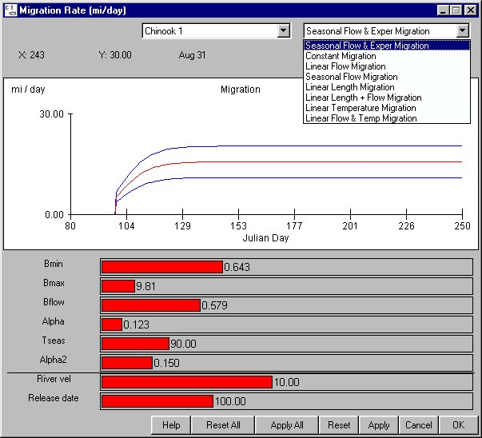

Migration Equation: Active Fish Migration Equation
Selecting Behavior Migration Equation opens a window for setting the migration rate equations for each stock. Several migration rate equations are available, ranging from a simple model with a constant migration rate to a more complex model which relates migration rate to river velocity, date in the season, and downstream acceleration. In addition, other equations relate migration rate to fish length and temperature. For the given stock, the parameter sliders in the equation window change the shape of the migration pattern in well-defined ways.
Migration Equation opens a window for setting the migration rate equations for each stock. Several migration rate equations are available, ranging from a simple model with a constant migration rate to a more complex model which relates migration rate to river velocity, date in the season, and downstream acceleration. In addition, other equations relate migration rate to fish length and temperature. For the given stock, the parameter sliders in the equation window change the shape of the migration pattern in well-defined ways.
Migration rate equations parameter definitions
- B0: Constant migration rate term (m/day).
- Bmin: Minimum flow independent migration rate (m/day) at the time of release.
- Bmax: Maximum flow independent migration rate (m/day).
Note. With Bmax > Bmin, the fish have a tendency to migrate faster the longer they have been in the river. This tendency can be "turned off" by setting Bmax = Bmin. Also, flow independent migration can be turned off entirely by setting Bmax = Bmin = 0.
- Bflow: Determines the proportion of the river velocity used for downstream migration when the migrants are fully smolted.
- Btemp: Coefficient that relates temperature (degrees C) to migration rate.
- Blen: Coefficient that relates fish length to migration rate.
- Alpha: Slope parameter that determines how quickly fish change from early season to late season behavior in terms of flow response (1/days).
- Tseas: Inflection point of the flow dependent term that has the effect of shifting the flow effect through the season (Julian Days).
- Alpha2: Slope parameter that determines rate of change from the minimum flow-independent migration rate (Bmin) to the maximum flow-independent migration rate (Bmax).
In addition to parameters that vary the migration rate parameters, you may vary covariates that affect migration rate. These covariates are varied in the display only.
- River vel (display only): Average river velocity during the average migration period for each of the reaches (mi/day).
- Release date (display only): Release date in Julian days.
- Fish len (display only): Length of fish at release (mm).
- River temp (display only): River temperature (degrees C).
This is an Equation Input window.

Migration Equation window